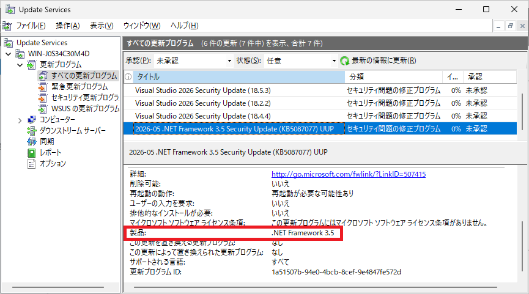
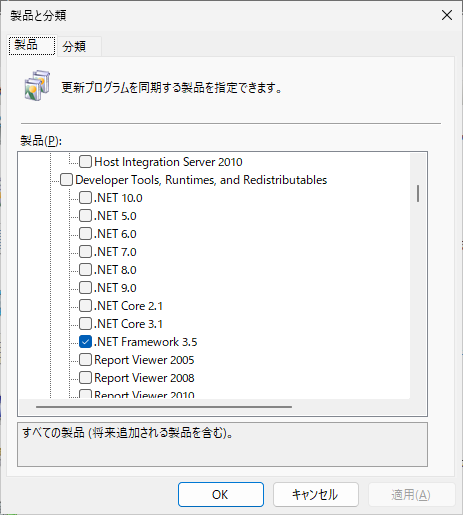
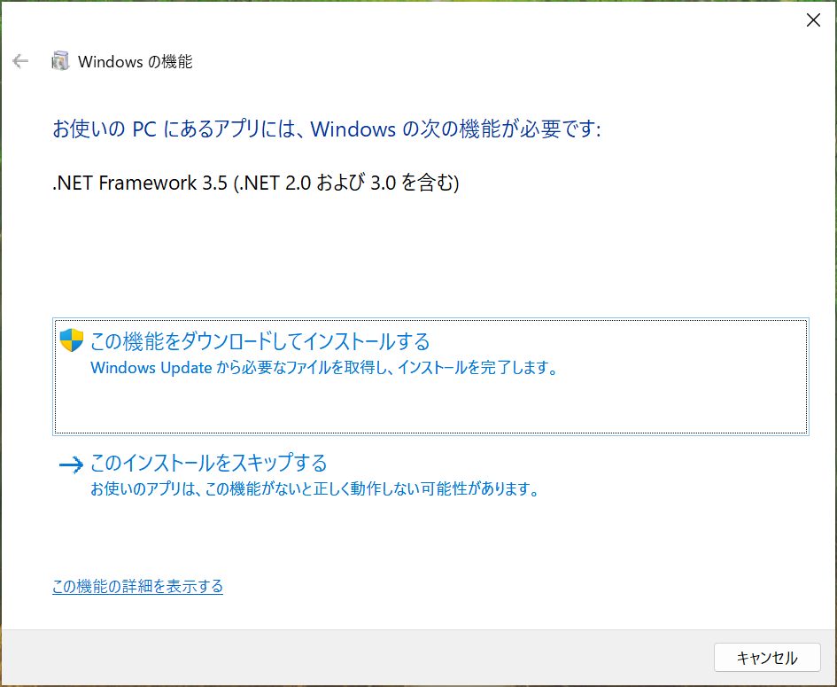
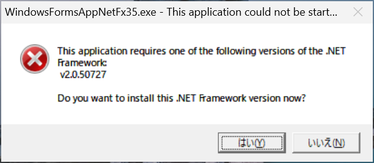
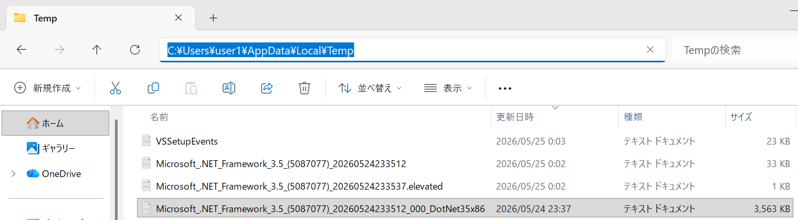

こんにちは、Japan Developer Support Core チームの松井です。 今回は、Windows 11 version 26H1 (ビルド 28000) 以降で .NET Framework 3.5 の展開方法が変更された点について、公式情報と運用上の注意点をまとめます。
なお、展開方法の変更が行われた背景としては、.NET Framework 3.5 はすでにリリースから 15 年以上が経過しているレガシーとして位置づけられているフレームワーク バージョンで、サポート終了日も近づいていることが挙げられます。既存の .NET Framework 3.5 アプリケーションを継続運用する場合は、サポート終了を見据えて .NET Framework 4 系または .NET への移行計画を併せて検討することを強くお勧めします。
変更の概要
Windows 11 version 25H2 以前では、.NET Framework 3.5 は Windows の機能 (FoD: Features on Demand) として有効化できました。 一方で、Windows 11 version 26H1 (ビルド 28000) 以降では、.NET Framework 3.5 はスタンドアロン インストーラーでのみ提供され、Windows コンポーネントとしての有効化はできません。
また、25H2 以前向けの .NET Framework 3.5 の更新プログラムは Windows の製品分類となっていましたが、 26H1 以降向けの .NET Framework 3.5 の更新プログラムは .NET Framework 3.5 の製品分類となります。
公式ページ
- FAQ
- ライフサイクル
- アナウンス ブログ
- ダウンロード ページ
更新プログラムの製品の変更と WSUS 運用への影響
Windows 11 version 26H1 以降の .NET Framework 3.5 の更新プログラムは、Windows ではなく .NET Framework 3.5 の製品として提供されます。

このため、従来どおり Windows のみを同期対象にしている WSUS 環境では、.NET Framework 3.5 の更新プログラムが同期されず、結果としてセキュリティ更新プログラムの適用漏れが発生する可能性があります。Windows 11 version 26H1 以降でも .NET Framework 3.5 の利用があり WSUS を運用されている場合は、同期や自動承認の構成を変更する必要がないか確認してください。

アップグレード時の影響
25H2 以前から 26H1 以降へアップグレードする場合
FAQ に記載のとおり、Windows を次のリリースへアップグレードする場合、.NET Framework 3.5 は再インストールが必要です。 そのため、25H2 以前の環境で .NET Framework 3.5 を利用していた場合でも、26H1 以降へアップグレード後は未インストール状態となるため、スタンドアロン インストーラーでの再導入を前提に運用計画を立てる必要があります。
.NET Framework 3.5 の構成を変更している場合 (GAC, NGen, machine.config など)
.NET Framework 3.5 の再インストールが必要になるため、.NET Framework 3.5 の構成を行っている場合は、アップグレード後に再適用が必要になる可能性があります。 以下は代表例です。
- GAC へのアセンブリ登録
- NGen によるネイティブ イメージ生成
- machine.config への設定反映
- ASP.NET 関連の登録や設定 (例: IIS 上で ASP.NET 3.5 を利用するための構成)
特に、手動運用で差分を管理している環境では、アップグレード前に現在の構成を採取し、アップグレード後に必要な構成の再適用・再検証を行う手順を準備しておくことをお勧めします。
.NET Framework 3.5 が未有効化の環境でのアプリ起動時の動作
25H2 以前では、.NET Framework 3.5 が未有効化の環境で対象アプリを起動すると、.NET Framework 3.5 を有効化するための FoD の画面が表示されていました。

26H1 以降では FAQ の記載のとおり、アプリケーション実行時に "プログラム互換性アシスタント" または .NET Framework ランタイムのメッセージ ボックスが表示され、.NET Framework 3.5 のインストール情報 (ダウンロード情報を含むドキュメント) に案内されます。

スタンドアロン インストーラーのログ採取
.NET Framework 3.5 スタンドアロン インストーラー実行時には、インストーラーを実行したユーザー アカウントの一時フォルダー (%temp% フォルダー、通常は C:\users\<user name>\AppData\Local\Temp) 配下に Microsoft_.NET_Framework_3.5 で始まるファイル名のログが出力されます。

ログの収集には Visual Studio and .NET Framework Log Collection Tool (collect.exe) を利用する方法が有効です。
以下の手順は、Microsoft Learn のトラブルシューティング ページに記載されているステップに基づいています。
- Microsoft Visual Studio および .NET Framework ログ収集ツール をダウンロードします。
- ダウンロードしたファイル (
collect.exe) を任意のフォルダーに保存します。 - 管理者としてコマンド プロンプトを起動します。
- 保存したフォルダーで
Collect.exeを実行します。 %TEMP%\vslogs.zip(通常はC:\Users\<ユーザー名>\AppData\Local\Temp\vslogs.zip) が生成されますので取得してご提供ください。
Note
.NET Framework 3.5 のインストールを実行したアカウントで collect.exe を実行する必要があります。例えば SYSTEM アカウントで実行される構成管理ツールのエージェントを通じて .NET Framework 3.5 を展開している場合、collect.exe -user:SYSTEM のようにアカウントを指定する必要があります。
本ブログの内容は弊社の公式見解として保証されるものではなく、開発・運用時の参考情報としてご活用いただくことを目的としています。もし公式な見解が必要な場合は、弊社ドキュメント (https://learn.microsoft.com や https://support.microsoft.com) をご参照いただくか、もしくは私共サポートまでお問い合わせください。